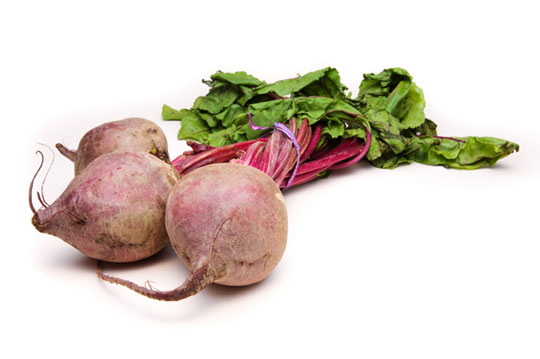

Organic Utopia is a community owned and operated supermarket and marketplace. Anyone may shop in our stores but members enjoy special discounts and other benefits.
Member benefits:

We've partnered with local farmers and producers to bring you the freshest vegetables possible. Take a look at what's on our shelves.
Incan warriors claimed it increased their stamina. Is it a cereal? Is it a grass? No matter how you classify quinoa, it can be an important part of your daily breakfast. Take a look at some of our favorite recipes.